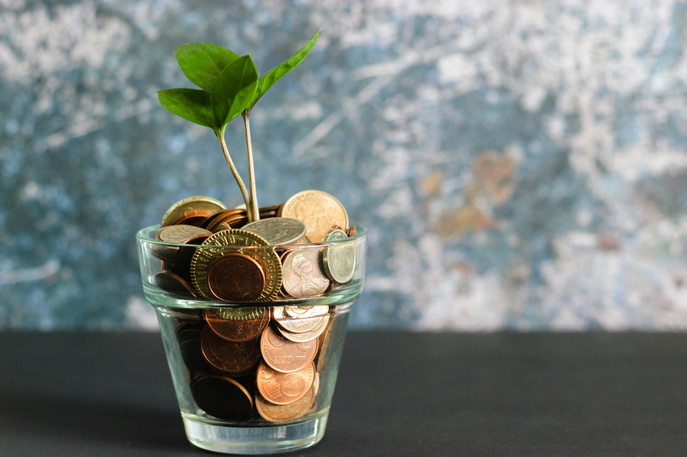

How to Build Passive Income Streams in 2026 (That Actually Work)
Learn how to build real passive income streams in 2026. From dividend investing to digital products, here are the strategies that generate money while you
Z Zar · 20 Apr 2026 — 4 min read

📚 Part of our Complete FIRE Guide
Passive income is one of the most misused terms in personal finance. Most things called passive income require significant upfront work, ongoing maintenance, or both.
True passive income — money that flows in with minimal ongoing effort — exists. But it requires either capital to invest, time to build an asset upfront, or both.
Here are the passive income streams that actually work in 2026, ranked by how passive they truly are.
Tier 1: Truly Passive (Requires Capital, Minimal Ongoing Work)
Dividend Investing
Buy dividend-paying stocks and ETFs. Receive cash payments every quarter automatically. Reinvest or spend them.
How passive it is: Extremely passive once set up. Check quarterly at most.
Capital required: Any amount. Even $1,000 generates small but real dividends.
Expected return: 2-5% dividend yield annually, plus capital appreciation.
How to start: Open a brokerage account at Fidelity or Schwab. Buy dividend ETFs like SCHD (Schwab US Dividend Equity ETF, 3.5% yield) or VYM (Vanguard High Dividend Yield ETF, 3% yield). Reinvest dividends automatically.
Realistic expectation: $100,000 invested in dividend ETFs at 3.5% yield generates $3,500/year in dividends — $292/month. Passive, reliable, growing over time.
High-Yield Savings Accounts and CDs
Put cash in a high-yield savings account earning 4-5% APY. Or lock money in a CD (Certificate of Deposit) for a fixed term at a guaranteed rate.
How passive it is: Completely passive. Zero ongoing work.
Capital required: Any amount.
Expected return: 4-5% APY in 2026.
How to start: Open a HYSA at Marcus, SoFi, or Ally. Transfer your emergency fund and short-term savings there immediately.
Realistic expectation: $20,000 in a HYSA at 4.5% generates $900/year — $75/month with zero effort.
Treasury Bills and I-Bonds
US government bonds are the safest passive income available. Treasury bills (T-bills) are short-term, I-bonds are inflation-protected.
How passive it is: Completely passive.
Capital required: $100 minimum for T-bills, $10,000/year limit for I-bonds.
Expected return: 4-5% for T-bills. I-bonds adjust with inflation.
How to start: Open an account at TreasuryDirect.gov. Buy directly from the US government with no fees.
Tier 2: Semi-Passive (Significant Upfront Work, Minimal Ongoing)
Digital Products
Create once. Sell forever. E-books, templates, courses, presets, spreadsheets, and digital downloads can generate income for years with zero ongoing work after creation.
How passive it is: Creation requires significant upfront work. After launch, largely passive.
Tier 3: Active Passive Income (Requires Ongoing Involvement)
Rental Properties
Buy property. Rent it out. Collect monthly income.
How passive it is: Less passive than most people expect. Tenant issues, maintenance, vacancies, and management require ongoing attention.
The Foundational Reading on Passive Income
Rich Dad Poor Dad
by Robert Kiyosaki
Kiyosaki's asset vs. liability framework is the essential mental model for understanding which passive income streams actually build wealth.
Affiliate Marketing Through a Blog or YouTube Channel
Recommend products you genuinely use. Earn a commission when readers or viewers buy through your link. The content you create today can generate commissions for years.
How passive it is: Requires ongoing content creation initially. Becomes passive as old content continues ranking and generating traffic.
Capital required: Minimal. Domain and hosting cost under $20/month.
Expected return: $500-$10,000+/month for established sites.
How to start: Create content in a specific niche. Join affiliate programs (Amazon Associates, ShareASale, individual brand programs). Include affiliate links naturally in relevant content.
Licensing Your Photos or Music
If you take quality photos or produce music, licensing platforms pay you every time someone downloads or uses your work.
How passive it is: Creation upfront, then largely passive.
Capital required: Equipment you may already own.
Expected return: $100-$2,000/month for prolific creators with large catalogs.
How to start: Upload photos to Shutterstock, Adobe Stock, or Getty Images. Upload music to Musicbed or Artlist.
Capital required: Significant. Typically $30,000-$100,000+ for down payment and reserves.
Expected return: 6-12% cash-on-cash return for well-chosen properties.
How to make it more passive: Hire a property manager (costs 8-12% of rent but removes most ongoing work).
Peer-to-Peer Lending
Lend money to individuals or businesses through platforms like Prosper or Funding Circle. Earn interest payments.
How passive it is: Setup requires research. Ongoing monitoring recommended.
Capital required: $1,000+ to meaningfully diversify.
Expected return: 5-10% annual return with moderate risk.
Risk note: Unlike bank accounts, peer-to-peer loans are not FDIC insured. Borrower defaults can reduce returns significantly.
The Honest Truth About Passive Income
Most passive income streams require one of three things: money to invest, time to build an asset, or both. There is no shortcut.
The realistic path for most people:
Phase 1 (Years 1-3): Build capital through active income. Max retirement accounts. Build emergency fund. Invest surplus in dividend ETFs and HYSAs.
Phase 2 (Years 2-5): Create one digital product or content asset. Start small. Build an audience around a specific knowledge area.
Phase 3 (Years 5+): Passive income streams compound. Dividends grow. Content assets generate ongoing affiliate income. Reinvest everything.
The Bottom Line
Passive income is real but rarely instant. The most reliable path starts with dividend investing — it requires capital but zero skill and minimal time.
Open a brokerage account today. Buy SCHD or VYM. Set up automatic monthly contributions. Reinvest dividends.
That single action, repeated consistently, builds real passive income that grows every year without requiring anything from you beyond the initial setup.
Want to go deeper on this? See How to Create Multiple Income Streams in 2026.
Want to go deeper on this? See Best Side Hustles for Millennials in 2026 (Ranked by Income Potential).
📥 Free download: The 10-Step Financial Independence Checklist
The exact roadmap I followed to build my financial foundation. 11 pages, professionally designed, free with email signup — no credit card, unsubscribe anytime.
Disclosure: This post may contain affiliate links. ZarWealth may earn a commission if you sign up through our links, at no extra cost to you.